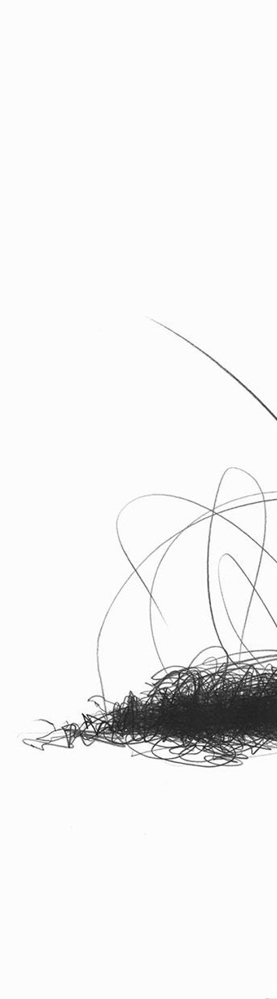
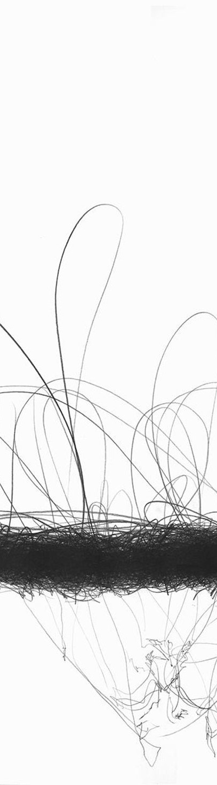
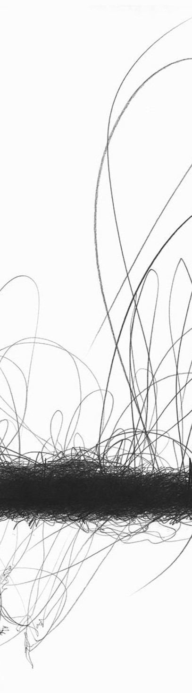
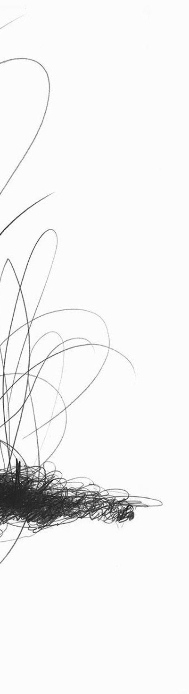

OUTPUTS
SiX focuses on several key research areas:

Digital Drawing Activities
Specifically created to help LIS patients communicate and express themselves.

Guidelines and Manual of Procedures
Providing clear instructions on how to use and implement the digital drawing tools.

Replicable Prototypes
Allowing healthcare providers to use and test the technology in their settings.

Online Collaborative Platform
Enabling LIS patients and their support networks to connect and collaborate from anywhere.